if (!require(remotes)) {
install.packages("remotes")
}
remotes::install_github("fbreitwieser/pavian")
pavian::runApp(port = 5000)10 Taxonomic Profiling, OTU Tables and Visualisation
Self guided: chapter environment setup
For this chapter’s exercises, if not already performed, you will need to download the chapter’s dataset, decompress the archive, and create and activate the conda environment.
Do this, use wget or right click and save to download this Zenodo archive: 10.5281/zenodo.8413138, and unpack
tar xvf taxonomic-profiling.tar.gz
cd taxonomic-profiling/You can then create the subsequently activate environment with
conda env create -f taxonomic-profiling.yml
conda activate taxonomic-profiling10.1 Introduction
In this chapter, we’re going to look at taxonomic profiling, or in other words, how to get the microbial composition of a sample from the DNA sequencing data.
Though there are many algorithms, and even more different tools available to perform taxonomic profiling, the general idea remains the same (Figure 10.1).
After cleaning up the sequencing data, generally saved as FASTQ files, a taxonomic profiler is used to compare the sequenced DNA to a reference database of sequences from known organisms, in order to generate a taxonomic profile of all organisms identified in a sample (Figure 10.1)
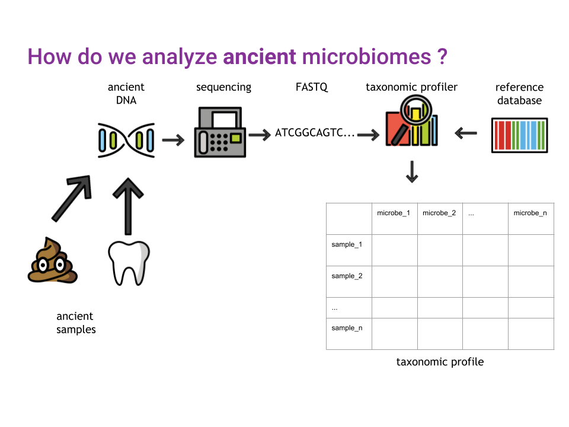
If you prefer text instead of pictograms, the workflow we’re going to cover today is outlined in Figure 10.2, adapted from Sharpton (2014)
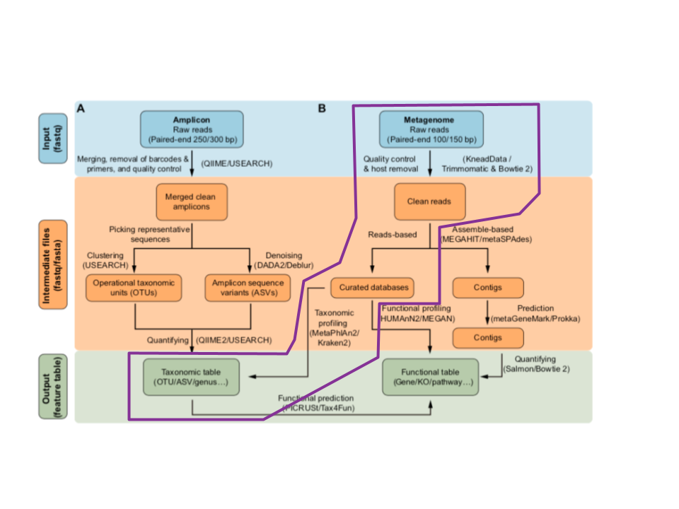
Because different organisms can possess the same DNA, especially when looking at shorter sequences, taxonomic profilers need to have a way to resolve the ambiguity in the taxonomic assignation (Figure 10.3).
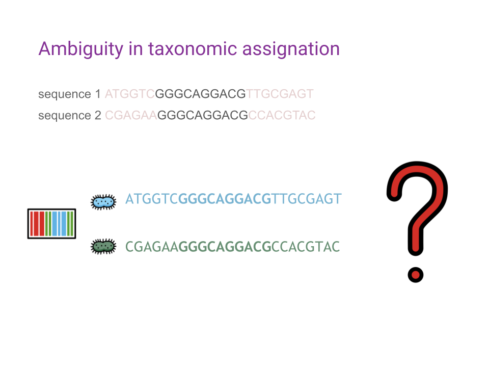
By leveraging an algorithm known as the Lowest Common Ancestor (LCA), and the taxonomic tree of all known species, ambiguities are going to be resolved by assigning a higher, less precise, taxonomic rank to ambiguous matches (Figure 10.4).
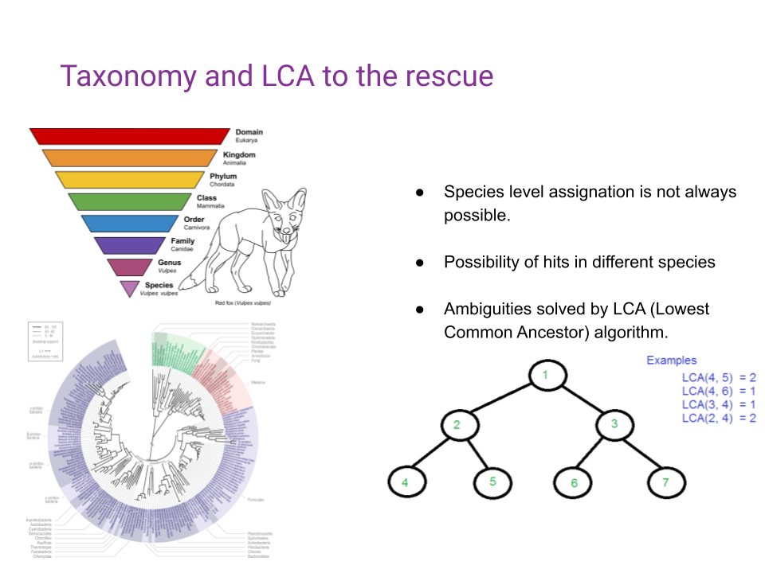
10.2 Chapter Overview
Today, we’re going to use the following tools:
- fastp (Chen et al. 2018) for sequencing data cleaning
- MetaPhlAn (Segata et al. 2012), for taxonomic profiling
- Krona (Brian D. Ondov, Bergman, and Phillippy 2011a) and Pavian (Florian P. Breitwieser and Salzberg 2016) for the interactive exploration of the taxonomic profiles
- curatedMetagenomicData (Pasolli et al. 2017) for retrieving modern comparison data
- Python, pandas (Reback et al. 2022), plotnine (https://plotnine.readthedocs.io/en/stable/), and scikit-bio (scikit-bio 2022) to perform exploratory data analysis and a bit of microbial ecology
to explore a toy dataset that has already been prepared for you.
Preamble: what has been done to generate this toy dataset
10.2.1 Download and Subsample
import subprocess
import glob
from pathlib import PathFor this tutorial, we will be using the ERR5766177 library from the sample 2612 published by (Maixner et al. 2021)
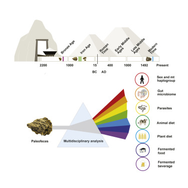
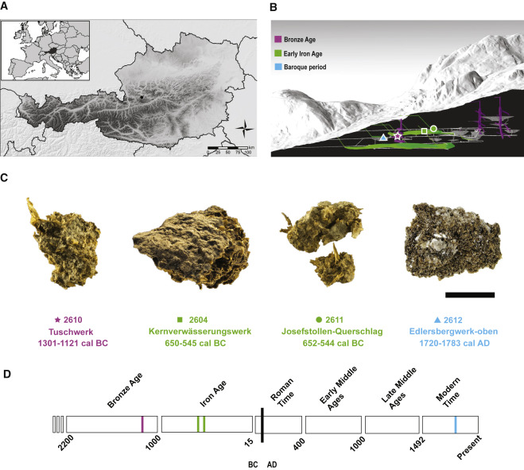`
10.2.2 Subsampling the sequencing files to make the analysis quicker for this tutorial
This Python code defines a function called subsample that takes in a FASTQ file name, an output directory, and a depth value (defaulting to 1000000). The function uses the seqtk command-line tool to subsample the input FASTQ file to the desired depth and saves the output to a new file in the specified output directory. The function prints the constructed command string to the console for debugging purposes.
def subsample(filename, outdir, depth=1000000):
basename = Path(filename).stem
cmd = f"seqtk sample -s42 {filename} {depth} > {outdir}/{basename}_subsample_{depth}.fastq"
print(cmd)
subprocess.check_output(cmd, shell=True)This Python code uses a for loop to iterate over all the files in the ../data/raw/ directory that match the pattern *, and calls the subsample (defined above) function on each file in the directory ../data/subsampled.
for f in glob.glob("../data/raw/*"):
outdir = "../data/subsampled"
subsample(f, outdir)
Expand to see command output
seqtk sample -s42 ../data/raw/ERR5766177_PE.mapped.hostremoved.fwd.fq.gz 1000000 >
../data/subsampled/ERR5766177_PE.mapped.hostremoved.fwd.fq_subsample_1000000.fastq
seqtk sample -s42 ../data/raw/ERR5766177_PE.mapped.hostremoved.rev.fq.gz 1000000 >
../data/subsampled/ERR5766177_PE.mapped.hostremoved.rev.fq_subsample_1000000.fastqFinally, we compress all files to gzip format
gzip -f ../data/subsampled/*.fastq10.3 Working in a jupyter environment
This tutorial run-through is using a Jupyter Notebook (https://jupyter.org) for writing & executing Python code and for annotating.
Jupyter notebooks are convenient and have two types of cells: Markdown and Code. The markup cell syntax is very similar to R markdown. The markdown cells are used for annotating, which is important for sharing code with collaborators, reproducibility, and documentation.
To load, please run the following command from within the chapter’s directory.
cd notebooks/
jupyter notebook analysis.ipynbYou can then follow that notebook, which should mirror the contents of this chapter! Otherwise try making a new notebook within Jupyter File > New > Notebook!
Warning
If you wish to run all commands manually (i.e., without the notebook), you must make sure you run all commands while within the notebook directory of this chapter.
10.4 Data pre-processing
Before starting to analyze our data, we will need to pre-process them to remove reads mapping to the host genome, here, Homo sapiens.
To do so, I’ve used the first steps of the nf-core/eager (Fellows Yates et al. 2020) pipeline, more information of which can be found in the Ancient Metagenomic Pipelines chapter.
I’ve already done some pre-processed the data, and the resulting cleaned files are available in the data/eager_cleaned/.
Self-guided: onstructions for manual pre-preparation of data
If you wish to re-pre-prepare the data yourself, the basic eager command to do so is below, running on the output of the previous block in chapter overview.
nextflow run nf-core/eager \
-r 2.4.7 \
-profile <docker/singularity/podman/conda/institute> \
--input '*_R{1,2}.fastq.gz' \
--fasta 'human_genome.fasta' \
--hostremoval_input_fastq10.5 Adapter sequence trimming and low-quality bases trimming
Sequencing adapters are small DNA sequences adding prior to DNA sequencing to allow the DNA fragments to attach to the sequencing flow cells (see Introduction to NGS Sequencing). Because these adapters could interfere with downstream analyses, we need to remove them before proceeding any further. Furthermore, because the quality of the sequencing is not always optimal, we need to remove bases of lower sequencing quality to might lead to spurious results in downstream analyses.
To perform both of these tasks, we’ll use the program fastp (https://github.com/OpenGene/fastp) by Chen et al. (2018).
The following command gets you the help of fastp (the --help option is a common option in command-line tools that displays a list of available options and their descriptions).
fastp -h
Expand to see command output
option needs value: --html
usage: fastp [options] ...
options:
-i, --in1 read1 input file name (string [=])
-o, --out1 read1 output file name (string [=])
-I, --in2 read2 input file name (string [=])
-O, --out2 read2 output file name (string [=])
--unpaired1 for PE input, if read1 passed QC but read2 not, it will be written to unpaired1.
Default is to discard it. (string [=])
--unpaired2 for PE input, if read2 passed QC but read1 not, it will be written to unpaired2.
If --unpaired2 is same as --unpaired1 (default mode), both unpaired reads will be
written to this same file. (string [=])
--overlapped_out for each read pair, output the overlapped region if it has no any mismatched
base. (string [=])
--failed_out specify the file to store reads that cannot pass the filters. (string [=])
-m, --merge for paired-end input, merge each pair of reads into a single read if they are
overlapped. The merged reads will be written
to the file given by --merged_out, the unmerged reads will be written to the
files specified by --out1 and --out2. The merging mode is disabled by default.
--merged_out in the merging mode, specify the file name to store merged output, or specify
--stdout to stream the merged output (string [=])
--include_unmerged in the merging mode, write the unmerged or unpaired reads to the file specified
by --merge. Disabled by default.
-6, --phred64 indicate the input is using phred64 scoring (it'll be converted to phred33,
so the output will still be phred33)
-z, --compression compression level for gzip output (1 ~ 9). 1 is fastest, 9 is smallest, default is 4. (int [=4])
--stdin input from STDIN. If the STDIN is interleaved paired-end FASTQ, please also add --interleaved_in.
--stdout stream passing-filters reads to STDOUT. This option will result in interleaved
FASTQ output for paired-end output. Disabled by default.
--interleaved_in indicate that <in1> is an interleaved FASTQ which contains both read1 and read2.
Disabled by default.
--reads_to_process specify how many reads/pairs to be processed. Default 0 means process all reads. (int [=0])
--dont_overwrite don't overwrite existing files. Overwritting is allowed by default.
--fix_mgi_id the MGI FASTQ ID format is not compatible with many BAM operation tools, enable this option to fix it.
-V, --verbose output verbose log information (i.e. when every 1M reads are processed).
-A, --disable_adapter_trimming adapter trimming is enabled by default. If this option is specified, adapter trimming is disabled
-a, --adapter_sequence the adapter for read1. For SE data, if not specified, the adapter will be auto-detected.
For PE data, this is used if R1/R2 are found not overlapped. (string [=auto])
--adapter_sequence_r2 the adapter for read2 (PE data only). This is used if R1/R2 are found not overlapped.
If not specified, it will be the same as <adapter_sequence> (string [=auto])
--adapter_fasta specify a FASTA file to trim both read1 and read2 (if PE) by all the sequences in this FASTA file (string [=])
--detect_adapter_for_pe by default, the auto-detection for adapter is for SE data input only, turn on this
option to enable it for PE data.
-f, --trim_front1 trimming how many bases in front for read1, default is 0 (int [=0])
-t, --trim_tail1 trimming how many bases in tail for read1, default is 0 (int [=0])
-b, --max_len1 if read1 is longer than max_len1, then trim read1 at its tail to make it as
long as max_len1. Default 0 means no limitation (int [=0])
-F, --trim_front2 trimming how many bases in front for read2. If it's not specified, it will follow read1's settings (int [=0])
-T, --trim_tail2 trimming how many bases in tail for read2. If it's not specified, it will follow read1's settings (int [=0])
-B, --max_len2 if read2 is longer than max_len2, then trim read2 at its tail to make it as long as max_len2.
Default 0 means no limitation. If it's not specified, it will follow read1's settings (int [=0])
-D, --dedup enable deduplication to drop the duplicated reads/pairs
--dup_calc_accuracy accuracy level to calculate duplication (1~6), higher level uses more memory (1G, 2G, 4G, 8G, 16G, 24G).
Default 1 for no-dedup mode, and 3 for dedup mode. (int [=0])
--dont_eval_duplication don't evaluate duplication rate to save time and use less memory.
-g, --trim_poly_g force polyG tail trimming, by default trimming is automatically enabled for Illumina NextSeq/NovaSeq data
--poly_g_min_len the minimum length to detect polyG in the read tail. 10 by default. (int [=10])
-G, --disable_trim_poly_g disable polyG tail trimming, by default trimming is automatically enabled for Illumina NextSeq/NovaSeq data
-x, --trim_poly_x enable polyX trimming in 3' ends.
--poly_x_min_len the minimum length to detect polyX in the read tail. 10 by default. (int [=10])
-5, --cut_front move a sliding window from front (5') to tail, drop the bases in the window if
its mean quality < threshold, stop otherwise.
-3, --cut_tail move a sliding window from tail (3') to front, drop the bases in the window if
its mean quality < threshold, stop otherwise.
-r, --cut_right move a sliding window from front to tail, if meet one window with mean quality
< threshold, drop the bases in the window and the right part, and then stop.
-W, --cut_window_size the window size option shared by cut_front, cut_tail or cut_sliding. Range: 1~1000, default: 4 (int [=4])
-M, --cut_mean_quality the mean quality requirement option shared by cut_front, cut_tail or cut_sliding.
Range: 1~36 default: 20 (Q20) (int [=20])
--cut_front_window_size the window size option of cut_front, default to cut_window_size if not specified (int [=4])
--cut_front_mean_quality the mean quality requirement option for cut_front, default to cut_mean_quality if not specified (int [=20])
--cut_tail_window_size the window size option of cut_tail, default to cut_window_size if not specified (int [=4])
--cut_tail_mean_quality the mean quality requirement option for cut_tail, default to cut_mean_quality if not specified (int [=20])
--cut_right_window_size the window size option of cut_right, default to cut_window_size if not specified (int [=4])
--cut_right_mean_quality the mean quality requirement option for cut_right, default to cut_mean_quality if not specified (int [=20])
-Q, --disable_quality_filtering quality filtering is enabled by default. If this option is specified, quality filtering is disabled
-q, --qualified_quality_phred the quality value that a base is qualified. Default 15 means phred quality >=Q15 is qualified. (int [=15])
-u, --unqualified_percent_limit how many percents of bases are allowed to be unqualified (0~100). Default 40 means 40% (int [=40])
-n, --n_base_limit if one read's number of N base is >n_base_limit, then this read/pair is discarded. Default is 5 (int [=5])
-e, --average_qual if one read's average quality score <avg_qual, then this read/pair is discarded.
Default 0 means no requirement (int [=0])
-L, --disable_length_filtering length filtering is enabled by default. If this option is specified, length filtering is disabled
-l, --length_required reads shorter than length_required will be discarded, default is 15. (int [=15])
--length_limit reads longer than length_limit will be discarded, default 0 means no limitation. (int [=0])
-y, --low_complexity_filter enable low complexity filter. The complexity is defined as the percentage of base
that is different from its next base (base[i] != base[i+1]).
-Y, --complexity_threshold the threshold for low complexity filter (0~100). Default is 30, which means 30% complexity is required. (int [=30])
--filter_by_index1 specify a file contains a list of barcodes of index1 to be filtered out, one barcode per line (string [=])
--filter_by_index2 specify a file contains a list of barcodes of index2 to be filtered out, one barcode per line (string [=])
--filter_by_index_threshold the allowed difference of index barcode for index filtering, default 0 means completely identical. (int [=0])
-c, --correction enable base correction in overlapped regions (only for PE data), default is disabled
--overlap_len_require the minimum length to detect overlapped region of PE reads. This will affect overlap analysis based PE merge,
adapter trimming and correction. 30 by default. (int [=30])
--overlap_diff_limit the maximum number of mismatched bases to detect overlapped region of PE reads.
This will affect overlap analysis based PE merge, adapter trimming and correction. 5 by default. (int [=5])
--overlap_diff_percent_limit the maximum percentage of mismatched bases to detect overlapped region of PE reads.
This will affect overlap analysis based PE merge, adapter trimming and correction. Default 20 means 20%. (int [=20])
-U, --umi enable unique molecular identifier (UMI) preprocessing
--umi_loc specify the location of UMI, can be (index1/index2/read1/read2/per_index/per_read, default is none (string [=])
--umi_len if the UMI is in read1/read2, its length should be provided (int [=0])
--umi_prefix if specified, an underline will be used to connect prefix and UMI (i.e.
prefix=UMI, UMI=AATTCG, final=UMI_AATTCG). No prefix by default (string [=])
--umi_skip if the UMI is in read1/read2, fastp can skip several bases following UMI, default is 0 (int [=0])
-p, --overrepresentation_analysis enable overrepresented sequence analysis.
-P, --overrepresentation_sampling one in (--overrepresentation_sampling) reads will be computed for overrepresentation
analysis (1~10000), smaller is slower, default is 20. (int [=20])
-j, --json the json format report file name (string [=fastp.json])
-h, --html the html format report file name (string [=fastp.html])
-R, --report_title should be quoted with ' or ", default is "fastp report" (string [=fastp report])
-w, --thread worker thread number, default is 3 (int [=3])
-s, --split split output by limiting total split file number with this option (2~999), a sequential number prefix
will be added to output name ( 0001.out.fq, 0002.out.fq...), disabled by default (int [=0])
-S, --split_by_lines split output by limiting lines of each file with this option(>=1000), a sequential number prefix will be
added to output name ( 0001.out.fq, 0002.out.fq...), disabled by default (long [=0])
-d, --split_prefix_digits the digits for the sequential number padding (1~10), default is 4, so the filename will be padded as
0001.xxx, 0 to disable padding (int [=4])
--cut_by_quality5 DEPRECATED, use --cut_front instead.
--cut_by_quality3 DEPRECATED, use --cut_tail instead.
--cut_by_quality_aggressive DEPRECATED, use --cut_right instead.
--discard_unmerged DEPRECATED, no effect now, see the introduction for merging.
-?, --help print this messageHere we use fastp to preprocess a pair of FASTQ files. The code specifies the input files, merges the paired-end reads on their overlaps, removes duplicate reads, and generates JSON and HTML reports. The output files are saved in the ../results/fastp/ directory.
fastp \
--in1 ../data/subsampled/ERR5766177_PE.mapped.hostremoved.fwd.fq_subsample_1000000.fastq.gz \
--in2 ../data/subsampled/ERR5766177_PE.mapped.hostremoved.fwd.fq_subsample_1000000.fastq.gz \
--merge \
--merged_out ../results/fastp/ERR5766177.merged.fastq.gz \
--include_unmerged \
--dedup \
--json ../results/fastp/ERR5766177.fastp.json \
--html ../results/fastp/ERR5766177.fastp.html \
Expand to see command output
Read1 before filtering:
total reads: 1000000
total bases: 101000000
Q20 bases: 99440729(98.4562%)
Q30 bases: 94683150(93.7457%)
Read2 before filtering:
total reads: 1000000
total bases: 101000000
Q20 bases: 99440729(98.4562%)
Q30 bases: 94683150(93.7457%)
Merged and filtered:
total reads: 1994070
total bases: 201397311
Q20 bases: 198330392(98.4772%)
Q30 bases: 188843169(93.7665%)
Filtering result:
reads passed filter: 1999252
reads failed due to low quality: 728
reads failed due to too many N: 20
reads failed due to too short: 0
reads with adapter trimmed: 282
bases trimmed due to adapters: 18654
reads corrected by overlap analysis: 0
bases corrected by overlap analysis: 0
Duplication rate: 0.2479%
Insert size peak (evaluated by paired-end reads): 31
Read pairs merged: 228
% of original read pairs: 0.0228%
% in reads after filtering: 0.0114339%
JSON report: ../results/fastp/ERR5766177.fastp.json
HTML report: ../results/fastp/ERR5766177.fastp.html
fastp --in1 ../data/subsampled/ERR5766177_PE.mapped.hostremoved.fwd.fq_subsample_1000000.fastq.gz \
--in2 ../data/subsampled/ERR5766177_PE.mapped.hostremoved.fwd.fq_subsample_1000000.fastq.gz --merge \
--merged_out ../results/fastp/ERR5766177.merged.fastq.gz --include_unmerged --dedup \
--json ../results/fastp/ERR5766177.fastp.json --html ../results/fastp/ERR5766177.fastp.html
fastp v0.23.2, time used: 11 seconds
Question
What do you think of the number of read pairs that were merged ?
Answer
Here, only 228 read pairs were merged. This is due to the length of the reads of 100bp, and length of the DNA fragments. If you would use fewer cycles, and have shorter DNA fragments, you would expect this number to go up.
10.6 Taxonomic profiling with Metaphlan
MetaPhlAn is a computational tool for profiling the composition of microbial communities from metagenomic shotgun sequencing data.
metaphlan --help
Expand to see command output
usage: metaphlan --input_type {fastq,fasta,bowtie2out,sam} [--force]
[--bowtie2db METAPHLAN_BOWTIE2_DB] [-x INDEX]
[--bt2_ps BowTie2 presets] [--bowtie2_exe BOWTIE2_EXE]
[--bowtie2_build BOWTIE2_BUILD] [--bowtie2out FILE_NAME]
[--min_mapq_val MIN_MAPQ_VAL] [--no_map] [--tmp_dir]
[--tax_lev TAXONOMIC_LEVEL] [--min_cu_len]
[--min_alignment_len] [--add_viruses] [--ignore_eukaryotes]
[--ignore_bacteria] [--ignore_archaea] [--stat_q]
[--perc_nonzero] [--ignore_markers IGNORE_MARKERS]
[--avoid_disqm] [--stat] [-t ANALYSIS TYPE]
[--nreads NUMBER_OF_READS] [--pres_th PRESENCE_THRESHOLD]
[--clade] [--min_ab] [-o output file] [--sample_id_key name]
[--use_group_representative] [--sample_id value]
[-s sam_output_file] [--legacy-output] [--CAMI_format_output]
[--unknown_estimation] [--biom biom_output] [--mdelim mdelim]
[--nproc N] [--install] [--force_download]
[--read_min_len READ_MIN_LEN] [-v] [-h]
[INPUT_FILE] [OUTPUT_FILE]
DESCRIPTION
MetaPhlAn version 3.1.0 (25 Jul 2022):
METAgenomic PHyLogenetic ANalysis for metagenomic taxonomic profiling.
AUTHORS: Francesco Beghini (francesco.beghini@unitn.it),Nicola Segata (nicola.segata@unitn.it), Duy Tin Truong,
Francesco Asnicar (f.asnicar@unitn.it), Aitor Blanco Miguez (aitor.blancomiguez@unitn.it)
COMMON COMMANDS
We assume here that MetaPhlAn is installed using the several options available (pip, conda, PyPi)
Also BowTie2 should be in the system path with execution and read permissions, and Perl should be installed)
========== MetaPhlAn clade-abundance estimation =================
The basic usage of MetaPhlAn consists in the identification of the clades (from phyla to species )
present in the metagenome obtained from a microbiome sample and their
relative abundance. This correspond to the default analysis type (-t rel_ab).
* Profiling a metagenome from raw reads:
$ metaphlan metagenome.fastq --input_type fastq -o profiled_metagenome.txt
* You can take advantage of multiple CPUs and save the intermediate BowTie2 output for re-running
MetaPhlAn extremely quickly:
$ metaphlan metagenome.fastq --bowtie2out metagenome.bowtie2.bz2 --nproc 5 --input_type fastq -o profiled_metagenome.txt
* If you already mapped your metagenome against the marker DB (using a previous MetaPhlAn run), you
can obtain the results in few seconds by using the previously saved --bowtie2out file and
specifying the input (--input_type bowtie2out):
$ metaphlan metagenome.bowtie2.bz2 --nproc 5 --input_type bowtie2out -o profiled_metagenome.txt
* bowtie2out files generated with MetaPhlAn versions below 3 are not compatibile.
Starting from MetaPhlAn 3.0, the BowTie2 ouput now includes the size of the profiled metagenome and the average read length.
If you want to re-run MetaPhlAn using these file you should provide the metagenome s via --nreads:
$ metaphlan metagenome.bowtie2.bz2 --nproc 5 --input_type bowtie2out --nreads 520000 -o profiled_metagenome.txt
* You can also provide an externally BowTie2-mapped SAM if you specify this format with
--input_type. Two steps: first apply BowTie2 and then feed MetaPhlAn with the obtained sam:
$ bowtie2 --sam-no-hd --sam-no-sq --no-unal --very-sensitive -S metagenome.sam -x \
${mpa_dir}/metaphlan_databases/mpa_v30_CHOCOPhlAn_201901 -U metagenome.fastq
$ metaphlan metagenome.sam --input_type sam -o profiled_metagenome.txt
* We can also natively handle paired-end metagenomes, and, more generally, metagenomes stored in
multiple files (but you need to specify the --bowtie2out parameter):
$ metaphlan metagenome_1.fastq,metagenome_2.fastq --bowtie2out metagenome.bowtie2.bz2 --nproc 5 --input_type fastq
-------------------------------------------------------------------
========== Marker level analysis ============================
MetaPhlAn introduces the capability of characterizing organisms at the strain level using non
aggregated marker information. Such capability comes with several slightly different flavours and
are a way to perform strain tracking and comparison across multiple samples.
Usually, MetaPhlAn is first ran with the default -t to profile the species present in
the community, and then a strain-level profiling can be performed to zoom-in into specific species
of interest. This operation can be performed quickly as it exploits the --bowtie2out intermediate
file saved during the execution of the default analysis type.
* The following command will output the abundance of each marker with a RPK (reads per kilo-base)
higher 0.0. (we are assuming that metagenome_outfmt.bz2 has been generated before as
shown above).
$ metaphlan -t marker_ab_table metagenome_outfmt.bz2 --input_type bowtie2out -o marker_abundance_table.txt
The obtained RPK can be optionally normald by the total number of reads in the metagenome
to guarantee fair comparisons of abundances across samples. The number of reads in the metagenome
needs to be passed with the '--nreads' argument
* The list of markers present in the sample can be obtained with '-t marker_pres_table'
$ metaphlan -t marker_pres_table metagenome_outfmt.bz2 --input_type bowtie2out -o marker_abundance_table.txt
The --pres_th argument (default 1.0) set the minimum RPK value to consider a marker present
* The list '-t clade_profiles' analysis type reports the same information of '-t marker_ab_table'
but the markers are reported on a clade-by-clade basis.
$ metaphlan -t clade_profiles metagenome_outfmt.bz2 --input_type bowtie2out -o marker_abundance_table.txt
* Finally, to obtain all markers present for a specific clade and all its subclades, the
'-t clade_specific_strain_tracker' should be used. For example, the following command
is reporting the presence/absence of the markers for the B. fragilis species and its strains
the optional argument --min_ab specifies the minimum clade abundance for reporting the markers
$ metaphlan -t clade_specific_strain_tracker --clade s__Bacteroides_fragilis metagenome_outfmt.bz2 --input_typ
bowtie2out -o marker_abundance_table.txt
-------------------------------------------------------------------
positional arguments:
INPUT_FILE the input file can be:
* a fastq file containing metagenomic reads
OR
* a BowTie2 produced SAM file.
OR
* an intermediary mapping file of the metagenome generated by a previous MetaPhlAn run
If the input file is missing, the script assumes that the input is provided using the standard
input, or named pipes.
IMPORTANT: the type of input needs to be specified with --input_type
OUTPUT_FILE the tab-separated output file of the predicted taxon relative abundances
[stdout if not present]
Required arguments:
--input_type {fastq,fasta,bowtie2out,sam}
set whether the input is the FASTA file of metagenomic reads or
the SAM file of the mapping of the reads against the MetaPhlAn db.
Mapping arguments:
--force Force profiling of the input file by removing the bowtie2out file
--bowtie2db METAPHLAN_BOWTIE2_DB
Folder containing the MetaPhlAn database. You can specify the location by exporting the
DEFAULT_DB_FOLDER variable in the shell.
[default /Users/maxime/mambaforge/envs/summer_school_microbiome/lib/python3.9/site-packages/metaphlan/metaphlan_databases]
-x INDEX, --index INDEX
Specify the id of the database version to use. If "latest", MetaPhlAn will get the latest version.
If an index name is provided, MetaPhlAn will try to use it, if available, and skip the online check.
If the database files are not found on the local MetaPhlAn installation they
will be automatically downloaded [default latest]
--bt2_ps BowTie2 presets
Presets options for BowTie2 (applied only when a FASTA file is provided)
The choices enabled in MetaPhlAn are:
* sensitive
* very-sensitive
* sensitive-local
* very-sensitive-local
[default very-sensitive]
--bowtie2_exe BOWTIE2_EXE
Full path and name of the BowTie2 executable. This option allowsMetaPhlAn to reach the
executable even when it is not in the system PATH or the system PATH is unreachable
--bowtie2_build BOWTIE2_BUILD
Full path to the bowtie2-build command to use, deafult assumes that 'bowtie2-build is present in the system path
--bowtie2out FILE_NAME
The file for saving the output of BowTie2
--min_mapq_val MIN_MAPQ_VAL
Minimum mapping quality value (MAPQ) [default 5]
--no_map Avoid storing the --bowtie2out map file
--tmp_dir The folder used to store temporary files [default is the OS dependent tmp dir]
Post-mapping arguments:
--tax_lev TAXONOMIC_LEVEL
The taxonomic level for the relative abundance output:
'a' : all taxonomic levels
'k' : kingdoms
'p' : phyla only
'c' : classes only
'o' : orders only
'f' : families only
'g' : genera only
's' : species only
[default 'a']
--min_cu_len minimum total nucleotide length for the markers in a clade for
estimating the abundance without considering sub-clade abundances
[default 2000]
--min_alignment_len The sam records for aligned reads with the longest subalignment
length smaller than this threshold will be discarded.
[default None]
--add_viruses Allow the profiling of viral organisms
--ignore_eukaryotes Do not profile eukaryotic organisms
--ignore_bacteria Do not profile bacterial organisms
--ignore_archaea Do not profile archeal organisms
--stat_q Quantile value for the robust average
[default 0.2]
--perc_nonzero Percentage of markers with a non zero relative abundance for misidentify a species
[default 0.33]
--ignore_markers IGNORE_MARKERS
File containing a list of markers to ignore.
--avoid_disqm Deactivate the procedure of disambiguating the quasi-markers based on the
marker abundance pattern found in the sample. It is generally recommended
to keep the disambiguation procedure in order to minimize false positives
--stat Statistical approach for converting marker abundances into clade abundances
'avg_g' : clade global (i.e. normalizing all markers together) average
'avg_l' : average of length-normalized marker counts
'tavg_g' : truncated clade global average at --stat_q quantile
'tavg_l' : truncated average of length-normalized marker counts (at --stat_q)
'wavg_g' : winsorized clade global average (at --stat_q)
'wavg_l' : winsorized average of length-normalized marker counts (at --stat_q)
'med' : median of length-normalized marker counts
[default tavg_g]
Additional analysis types and arguments:
-t ANALYSIS TYPE Type of analysis to perform:
* rel_ab: profiling a metagenomes in terms of relative abundances
* rel_ab_w_read_stats: profiling a metagenomes in terms of relative abundances and estimate
the number of reads coming from each clade.
* reads_map: mapping from reads to clades (only reads hitting a marker)
* clade_profiles: normalized marker counts for clades with at least a non-null marker
* marker_ab_table: normalized marker counts (only when > 0.0 and normalized by metagenome size if --nreads is specified)
* marker_counts: non-normalized marker counts [use with extreme caution]
* marker_pres_table: list of markers present in the sample (threshold at 1.0 if not differently specified with --pres_th
* clade_specific_strain_tracker: list of markers present for a specific clade, specified with --clade, and all its subclades
[default 'rel_ab']
--nreads NUMBER_OF_READS
The total number of reads in the original metagenome. It is used only when
-t marker_table is specified for normalizing the length-normalized counts
with the metagenome size as well. No normalization applied if --nreads is not
specified
--pres_th PRESENCE_THRESHOLD
Threshold for calling a marker present by the -t marker_pres_table option
--clade The clade for clade_specific_strain_tracker analysis
--min_ab The minimum percentage abundance for the clade in the clade_specific_strain_tracker analysis
Output arguments:
-o output file, --output_file output file
The output file (if not specified as positional argument)
--sample_id_key name Specify the sample ID key for this analysis. Defaults to 'SampleID'.
--use_group_representative
Use a species as representative for species groups.
--sample_id value Specify the sample ID for this analysis. Defaults to 'Metaphlan_Analysis'.
-s sam_output_file, --samout sam_output_file
The sam output file
--legacy-output Old MetaPhlAn2 two columns output
--CAMI_format_output Report the profiling using the CAMI output format
--unknown_estimation Scale relative abundances to the number of reads mapping to known clades in order to estimate unknowness
--biom biom_output, --biom_output_file biom_output
If requesting biom file output: The name of the output file in biom format
--mdelim mdelim, --metadata_delimiter_char mdelim
Delimiter for bug metadata: - defaults to pipe. e.g. the pipe in k__Bacteria|p__Proteobacteria
Other arguments:
--nproc N The number of CPUs to use for parallelizing the mapping [default 4]
--install Only checks if the MetaPhlAn DB is installed and installs it if not. All other parameters are ignored.
--force_download Force the re-download of the latest MetaPhlAn database.
--read_min_len READ_MIN_LEN
Specify the minimum length of the reads to be considered when parsing the input file with
'read_fastx.py' script, default value is 70
-v, --version Prints the current MetaPhlAn version and exit
-h, --help show this help message and exitThe following command uses MetaPhlAn to profile the taxonomic composition of the ERR5766177 metagenomic sample. The input file is specified as a merged FASTQ file, and the output is saved as a text file containing the taxonomic profile. The --bowtie2out option is used to specify the output file for the Bowtie2 alignment, and the –nproc option is used to specify the number of CPUs to use for the analysis.
metaphlan ../results/fastp/ERR5766177.merged.fastq.gz \
--input_type fastq \
--bowtie2out ../results/metaphlan/ERR5766177.bt2.out \
--nproc 4 \
> ../results/metaphlan/ERR5766177.metaphlan_profile.txtThe main results files that we’re interested in is located at ../results/metaphlan/ERR5766177.metaphlan_profile.txt
It’s a tab separated file, with taxons in rows, with their relative abundance in the sample
head ../results/metaphlan/ERR5766177.metaphlan_profile.txt
Expand to see command output
#mpa_v30_CHOCOPhlAn_201901
#/home/maxime_borry/.conda/envs/maxime/envs/summer_school_microbiome/bin/metaphlan ../results/fastp/ERR5766177.merged.fastq.gz \
--input_type fastq --bowtie2out ../results/metaphlan/ERR5766177.bt2.out --nproc 8
#SampleID Metaphlan_Analysis
#clade_name NCBI_tax_id relative_abundance additional_species
k__Bacteria 2 82.23198
k__Archaea 2157 17.76802
k__Bacteria|p__Firmicutes 2|1239 33.47957
k__Bacteria|p__Bacteroidetes 2|976 28.4209
k__Bacteria|p__Actinobacteria 2|201174 20.33151
k__Archaea|p__Euryarchaeota 2157|28890 17.76802
Question
What is the letter preceding the __ before every clade name ? Eg. k__Bacteria
Answer
This letter corresponds to the rank of the clade. - k for Kingdom - p for Phylum - […] - f for Family - g for Genus - s for Species
10.7 Visualizing the taxonomic profile
10.7.1 Visualizing metaphlan taxonomic profile with Pavian
Pavian (https://github.com/fbreitwieser/pavian) by Breitweiser et al. (2020) is a web-based tool for interactive visualization and analysis of metagenomics data. It provides a user-friendly interface for exploring taxonomic and functional profiles of microbial communities, and allows users to generate interactive plots and tables that can be customised and shared (Figure 10.5).
You can open Pavian in your browser by visiting https://fbreitwieser.shinyapps.io/pavian.
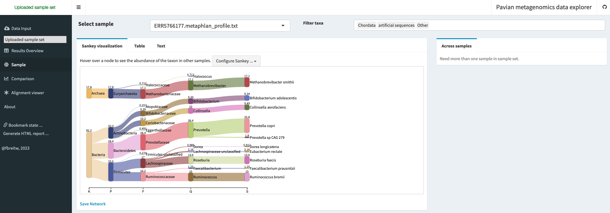
Expand for instructions for running yourself
There are different ways to run it:
If you have docker (https://www.docker.com/) installed
docker pull 'florianbw/pavian' docker run --rm -p 5000:80 florianbw/pavian
Then open your browser and visit localhost:5000
If you are familiar with R (https://www.r-project.org/)
Then open your browser and visit localhost:5000
Question
What is the relative abundance of the phylum Firmicutes ?
Answer
In this example, the relative abundance of the Firmicutes (officially renamed Bacillota since 2021) is 33.5%. You can verify this number either in the Sankey plot (section “Sample”), or in the comparison table (section “Comparison”) by selecting the Phylum tab.
10.7.2 Visualizing metaphlan taxonomic profile with Krona
Krona (https://github.com/marbl/Krona/wiki) by Ondov et al. (Brian D. Ondov, Bergman, and Phillippy 2011b) is a software tool for interactive visualization of hierarchical data, such as taxonomic profiles generated by metagenomics tools like MetaPhlAn. Krona allows users to explore the taxonomic composition of microbial communities in a hierarchical manner, from the highest taxonomic level down to the species level.
The metaphlan2krona.py script is used to convert the MetaPhlAn taxonomic profile output to a format that can be visualised by Krona. The output of the script is a text file that contains the taxonomic profile in a hierarchical format that can be read by Krona. The ktImportText command is then used to generate an interactive HTML file that displays the taxonomic profile in a hierarchical manner using Krona.
python ../scripts/metaphlan2krona.py -p ../results/metaphlan/ERR5766177.metaphlan_profile.txt -k ../results/krona/ERR5766177_krona.out
ktImportText -o ../results/krona/ERR5766177_krona.html ../results/krona/ERR5766177_krona.out
Expand to see command output
Writing ../results/krona/ERR5766177_krona.html...
Question
Which proportion of the Firmicutes is made of Clostridiales ?
Answer
The Clostridiales represent 63% of the Firmicutes in this sample. You can verify this by clicking in the Clostridiales and looking at the pie chart for Firmicutes on the top right of the screen.
10.8 Getting modern comparative reference data
In order to compare our sample with modern reference samples, I used the curatedMetagenomicsData package, which provides both curated metadata, and pre-computed metaphlan taxonomic profiles for published modern human samples.
The full R code to get these data is available in curatedMetagenomics/get_sources.Rmd.
I pre-selected 200 gut microbiome samples from non-westernised (100) and westernised (100) from healthy, non-antibiotic users donors.
# Load required packages
library(curatedMetagenomicData)
library(tidyverse)
# Filter samples based on specific criteria
sampleMetadata %>%
filter(body_site == "stool" & antibiotics_current_use == "no" & disease == "healthy") %>%
group_by(non_westernized) %>%
sample_n(100) %>%
ungroup() -> selected_samples
# Extract relative abundance data for selected samples
selected_samples %>%
returnSamples("relative_abundance") -> rel_ab
# Split relative abundance data by taxonomic rank and write to CSV files
data_ranks <- splitByRanks(rel_ab)
for (r in names(data_ranks)) {
# Print taxonomic rank and output file name
print(r)
output_file <- paste0("../../data/curated_metagenomics/modern_sources_", tolower(r), ".csv")
print(output_file)
# Write relative abundance data to CSV file
assay_rank <- as.data.frame(assay(data_ranks[[r]]))
write.csv(assay_rank, output_file)
}- The resulting pre-computed metaphlan taxonomic profiles (split by taxonomic ranks) are available in
data/curated_metagenomics - The associated metadata is available at
data/metadata/curated_metagenomics_modern_sources.csv
10.9 Loading the ancient sample taxonomic profile
This is the moment where we will use the Pandas (https://pandas.pydata.org) Python library (https://www.python.org/) to perform some data manipulation. We will also use the Taxopy (https://github.com/apcamargo/taxopy) library to work with taxonomic information.
In python we need to import necessary libraries, i.e. pandas and taxopy, and a couple of other utility libraries.
import pandas as pd
import taxopy
import pickle
import gzipAnd we then create an instance of the taxopy taxonomy database. This will take a few seconds/minutes, as it needs to download the entire NCBI taxonomy before storing in a local database.
taxdb = taxopy.TaxDb()Let’s read the metaphlan profile table with pandas (a python package with a similar concept to tidyverse dyplyr, tidyr packa). It’s a tab separated file, so we need to specify the delimiter as \t, and skip the comment lines of the files that start with #.
ancient_data = pd.read_csv("../results/metaphlan/ERR5766177.metaphlan_profile.txt",
comment="#",
delimiter="\t",
names=['clade_name','NCBI_tax_id','relative_abundance','additional_species'])To look at the head of a dataframe (Table 10.1) with pandas
ancient_data.head()| clade_name | NCBI_tax_id | relative_abundance | additional_species | |
|---|---|---|---|---|
| 0 | k__Bacteria | 2 | 82.23198 | NaN |
| 1 | k__Archaea | 2157 | 17.76802 | NaN |
| 2 | k__Bacteria|p__Firmicutes | 2|1239 | 33.47957 | NaN |
| 3 | k__Bacteria|p__Bacteroidetes | 2|976 | 28.42090 | NaN |
| 4 | k__Bacteria|p__Actinobacteria | 2|201174 | 20.33151 | NaN |
We can also specify more rows by randomly picking 10 rows to display (Table 10.2).
ancient_data.sample(10)| clade_name | NCBI_tax_id | relative_abundance | additional_species | |
|---|---|---|---|---|
| 1 | k__Archaea | 2157 | 17.76802 | NaN |
| 46 | k__Bacteria|p__Bacteroidetes|c_Bacteroidia|o… | 2|976|200643|171549|171552|838|165179 | 25.75544 | k__Bacteria|p__Bacteroidetes|c_Bacteroidia|o… |
| 55 | k__Bacteria|p__Firmicutes|c__Clostridia|o__Clo… | 2|1239|186801|186802|186803|189330|88431 | 0.91178 | NaN |
| 18 | k__Archaea|p__Euryarchaeota|c_Halobacteria|o… | 2157|28890|183963|2235 | 0.71177 | NaN |
| 36 | k__Bacteria|p__Actinobacteria|c__Actinobacteri… | 2|201174|1760|85004|31953|1678 | 9.39377 | NaN |
| 65 | k__Bacteria|p__Actinobacteria|c__Actinobacteri… | 2|201174|1760|85004|31953|1678|216816 | 0.05447 | k__Bacteria|p__Actinobacteria|c__Actinobacteri… |
| 37 | k__Bacteria|p__Firmicutes|c__Clostridia|o__Clo… | 2|1239|186801|186802|186803| | 2.16125 | NaN |
| 38 | k__Bacteria|p__Firmicutes|c__Clostridia|o__Clo… | 2|1239|186801|186802|541000|216851 | 1.24537 | NaN |
| 26 | k__Bacteria|p__Actinobacteria|c__Actinobacteri… | 2|201174|1760|85004|31953 | 9.39377 | NaN |
| 48 | k__Bacteria|p__Firmicutes|c__Clostridia|o__Clo… | 2|1239|186801|186802|541000|1263|40518 | 14.96816 | k__Bacteria|p__Firmicutes|c__Clostridia|o__Clo… |
Because for this analysis, we’re only going to look at the relative abundance, we’ll only use this column, and the Taxonomic ID (TAXID) (https://www.ncbi.nlm.nih.gov/taxonomy) information, so we can drop (get rid of) the unnecessary columns.
ancient_data = (
ancient_data
.rename(columns={'NCBI_tax_id': 'TAXID'})
.drop(['clade_name','additional_species'], axis=1)
)
Important
Always investigate your data at first !
ancient_data.relative_abundance.sum()700.00007
Question
What do you think of a 700% relative abundance ?
Answer
Let’s proceed further and try to understand what’s happening (Table 10.3).
ancient_data.head()| TAXID | relative_abundance | |
|---|---|---|
| 0 | 2 | 82.23198 |
| 1 | 2157 | 17.76802 |
| 2 | 2|1239 | 33.47957 |
| 3 | 2|976 | 28.42090 |
| 4 | 2|201174 | 20.33151 |
To make sense of the TAXID, we will use taxopy to get all the taxonomic related informations such as (Table 10.4):
- Name of the taxon
- Rank of the taxon
- Lineage of the taxon
## This function is here to help us get the taxon information
## from the metaphlan taxonomic ID lineage, of the following form
## 2|976|200643|171549|171552|838|165179
def to_taxopy(taxid_entry, taxo_db):
"""Returns a taxopy taxon object
Args:
taxid_entry(str): metaphlan TAXID taxonomic lineage
taxo_db(taxopy database)
Returns:
(bool): Returns a taxopy taxon object
"""
taxid = taxid_entry.split("|")[-1] # get the last element
try:
if len(taxid) > 0:
return taxopy.Taxon(int(taxid), taxo_db) # if it's not empty, get the taxon corresponding to the taxid
else:
return taxopy.Taxon(12908, taxo_db) # otherwise, return the taxon associated with unclassified sequences
except taxopy.exceptions.TaxidError as e:
return taxopy.Taxon(12908, taxo_db)ancient_data['taxopy'] = ancient_data['TAXID'].apply(to_taxopy, taxo_db=taxo_db)
ancient_data.head()| TAXID | relative_abundance | taxopy | |
|---|---|---|---|
| 0 | 2 | 82.23198 | s__Bacteria |
| 1 | 2157 | 17.76802 | s__Archaea |
| 2 | 2|1239 | 33.47957 | s__Bacteria;c__Terrabacteria group;p__Firmicutes |
| 3 | 2|976 | 28.42090 | s__Bacteria;c__FCB group;p__Bacteroidetes |
| 4 | 2|201174 | 20.33151 | s__Bacteria;c__Terrabacteria group;p__Actinoba… |
ancient_data = ancient_data.assign(
rank = ancient_data.taxopy.apply(lambda x: x.rank),
name = ancient_data.taxopy.apply(lambda x: x.name),
lineage = ancient_data.taxopy.apply(lambda x: x.name_lineage),
)
ancient_data| ...1 | TAXID | relative_abundance | taxopy | rank | name | lineage |
|---|---|---|---|---|---|---|
| 0 | 2 | 82.23198 | s__Bacteria | superkingdom | Bacteria | [Bacteria, cellular organisms, root] |
| 1 | 2157 | 17.76802 | s__Archaea | superkingdom | Archaea | [Archaea, cellular organisms, root] |
| 2 | 2\|1239 | 33.47957 | s__Bacteria;c__Terrabacteria group;p__Firmicutes | phylum | Firmicutes | [Firmicutes, Terrabacteria group, Bacteria, ce... |
| 3 | 2\|976 | 28.4209 | s__Bacteria;c__FCB group;p__Bacteroidetes | phylum | Bacteroidetes | [Bacteroidetes, Bacteroidetes/Chlorobi group, ... |
| 4 | 2\|201174 | 20.33151 | s__Bacteria;c__Terrabacteria group;p__Actinoba... | phylum | Actinobacteria | [Actinobacteria, Terrabacteria group, Bacteria... |
| ... | ... | ... | ... | ... | ... | ... |
| 62 | 2\|1239\|186801\|186802\|186803\|572511\|33039 | 0.2491 | s__Bacteria;c__Terrabacteria group;p__Firmicut... | species | [Ruminococcus] torques | [[Ruminococcus] torques, Mediterraneibacter, L... |
| 63 | 2\|201174\|84998\|84999\|84107\|1472762\|1232426 | 0.17084 | s__Bacteria;c__Terrabacteria group;p__Actinoba... | species | [Collinsella] massiliensis | [[Collinsella] massiliensis, Enorma, Coriobact... |
| 64 | 2\|1239\|186801\|186802\|186803\|189330\|39486 | 0.0769 | s__Bacteria;c__Terrabacteria group;p__Firmicut... | species | Dorea formicigenerans | [Dorea formicigenerans, Dorea, Lachnospiraceae... |
| 65 | 2\|201174\|1760\|85004\|31953\|1678\|216816 | 0.05447 | s__Bacteria;c__Terrabacteria group;p__Actinoba... | species | Bifidobacterium longum | [Bifidobacterium longum, Bifidobacterium, Bifi... |
| 66 | 2\|1239\|186801\|186802\|541000\|1263\|1262959 | 0.0144 | s__Bacteria;c__Terrabacteria group;p__Firmicut... | species | Ruminococcus sp. CAG:488 | [Ruminococcus sp. CAG:488, environmental sampl... |
Because our modern data are split by ranks, we’ll first split our ancient sample by rank
Which of the entries are at the species rank level?
ancient_species = ancient_data.query("rank == 'species'")
ancient_species.head()| ...1 | TAXID | relative_abundance | taxopy | rank | name | lineage |
|---|---|---|---|---|---|---|
| 46 | 2\|976\|200643\|171549\|171552\|838\|165179 | 25.75544 | s__Bacteria;c__FCB group;p__Bacteroidetes;c__B... | species | Prevotella copri | [Prevotella copri, Prevotella, Prevotellaceae,... |
| 47 | 2157\|28890\|183925\|2158\|2159\|2172\|2173 | 17.05626 | s__Archaea;p__Euryarchaeota;c__Methanomada gro... | species | Methanobrevibacter smithii | [Methanobrevibacter smithii, Methanobrevibacte... |
| 48 | 2\|1239\|186801\|186802\|541000\|1263\|40518 | 14.96816 | s__Bacteria;c__Terrabacteria group;p__Firmicut... | species | Ruminococcus bromii | [Ruminococcus bromii, Ruminococcus, Oscillospi... |
| 49 | 2\|1239\|186801\|186802\|186803\|841\|301302 | 13.57908 | s__Bacteria;c__Terrabacteria group;p__Firmicut... | species | Roseburia faecis | [Roseburia faecis, Roseburia, Lachnospiraceae,... |
| 50 | 2\|201174\|84998\|84999\|84107\|102106\|74426 | 9.49165 | s__Bacteria;c__Terrabacteria group;p__Actinoba... | species | Collinsella aerofaciens | [Collinsella aerofaciens, Collinsella, Corioba... |
Let’s do a bit of renaming to prepare for what’s coming next
ancient_species = ancient_species[['relative_abundance','name']].set_index('name').rename(columns={'relative_abundance':'ERR5766177'})
ancient_species.head()| name | ERR5766177 |
|---|---|
| Prevotella copri | 25.75544 |
| Methanobrevibacter smithii | 17.05626 |
| Ruminococcus bromii | 14.96816 |
| Roseburia faecis | 13.57908 |
| Collinsella aerofaciens | 9.49165 |
ancient_phylums = ancient_data.query("rank == 'phylum'")
ancient_phylums = ancient_phylums[['relative_abundance','name']].set_index('name').rename(columns={'relative_abundance':'ERR5766177'})
ancient_phylums| name | ERR5766177 |
|---|---|
| Firmicutes | 33.47957 |
| Bacteroidetes | 28.42090 |
| Actinobacteria | 20.33151 |
| Euryarchaeota | 17.76802 |
Now, let’s go back to the 700% relative abundance issue…
ancient_data.groupby('rank')['relative_abundance'].sum()
Expand to see command output
rank
class 99.72648
family 83.49854
genus 97.56524
no rank 19.48331
order 99.72648
phylum 100.00000
species 100.00002
superkingdom 100.00000
Name: relative_abundance, dtype: float64Seems better, right ?
Pause and think: why don’t we get exactly 100% ?
10.10 Bringing together ancient and modern samples
Now let’s load our modern reference samples
First at the phylum level (Table 10.9)
modern_phylums = pd.read_csv("../data/curated_metagenomics/modern_sources_phylum.csv", index_col=0)
modern_phylums.head()| ...1 | de028ad4-7ae6-11e9-a106-68b59976a384 | PNP_Main_283 | PNP_Validation_55 | G80275 | PNP_Main_363 | SAMEA7045572 | SAMEA7045355 | HD-13 | EGAR00001420773_9002000001423910 | SID5428-4 | ...12 | A46_02_1FE | TZ_87532 | A94_01_1FE | KHG_7 | LDK_4 | KHG_9 | A48_01_1FE | KHG_1 | TZ_81781 | A09_01_1FE |
|---|---|---|---|---|---|---|---|---|---|---|---|---|---|---|---|---|---|---|---|---|---|
| Bacteroidetes | 0.00000 | 17.44332 | 82.86400 | 69.99087 | 31.93081 | 51.76204 | 53.32801 | 74.59667 | 8.81074 | 26.39694 | ... | 1.97760 | 1.49601 | 67.21410 | 4.29848 | 68.16890 | 38.59709 | 14.81828 | 10.13908 | 57.14031 | 11.61544 |
| Firmicutes | 95.24231 | 60.47031 | 16.53946 | 22.81977 | 65.23075 | 41.96928 | 45.77661 | 23.51065 | 54.35341 | 62.23094 | ... | 76.68499 | 78.13269 | 29.72394 | 33.51772 | 19.11149 | 46.87139 | 72.68136 | 35.43789 | 40.57101 | 24.72113 |
| Proteobacteria | 4.49959 | 0.77098 | 0.05697 | 4.07757 | 0.27316 | 3.33972 | 0.02001 | 1.72865 | 0.00000 | 1.81016 | ... | 16.57250 | 0.76159 | 2.35058 | 9.83772 | 5.32392 | 0.19699 | 3.64655 | 17.64151 | 0.30580 | 56.20177 |
| Actinobacteria | 0.25809 | 10.27631 | 0.45187 | 1.11902 | 2.31075 | 2.92715 | 0.77667 | 0.16403 | 36.55138 | 1.19951 | ... | 3.01814 | 19.20468 | 0.69913 | 46.99479 | 7.39093 | 14.26365 | 5.47750 | 36.77145 | 1.16426 | 7.40894 |
| Verrucomicrobia | 0.00000 | 0.00784 | 0.00000 | 1.99276 | 0.25451 | 0.00000 | 0.00000 | 0.00000 | 0.09940 | 3.29795 | ... | 0.05011 | 0.00000 | 0.00000 | 0.00000 | 0.00000 | 0.00000 | 0.00000 | 0.00000 | 0.00000 | 0.00000 |
Then at the species level
modern_species = pd.read_csv("../data/curated_metagenomics/modern_sources_species.csv", index_col=0)As usual, we always check if our data has been loaded correctly (Table 10.10)
modern_species.head()| ...1 | de028ad4-7ae6-11e9-a106-68b59976a384 | PNP_Main_283 | PNP_Validation_55 | G80275 | PNP_Main_363 | SAMEA7045572 | SAMEA7045355 | HD-13 | EGAR00001420773_9002000001423910 | SID5428-4 | ...12 | A46_02_1FE | TZ_87532 | A94_01_1FE | KHG_7 | LDK_4 | KHG_9 | A48_01_1FE | KHG_1 | TZ_81781 | A09_01_1FE |
|---|---|---|---|---|---|---|---|---|---|---|---|---|---|---|---|---|---|---|---|---|---|
| Bacteroides vulgatus | 0 | 0.60446 | 1.59911 | 4.39085 | 0.04494 | 4.66505 | 2.99431 | 29.30325 | 1.48560 | 0.98818 | ... | 0.20717 | 0 | 0.00309 | 0.48891 | 0.00000 | 0.02230 | 0.00000 | 0.15112 | 0 | 0.00836 |
| Bacteroides stercoris | 0 | 0.00546 | 0.00000 | 0.00000 | 2.50789 | 0.00000 | 20.57498 | 8.28443 | 1.23261 | 0.00000 | ... | 0.00000 | 0 | 0.00000 | 0.00693 | 0.00000 | 0.02603 | 0.00000 | 0.19318 | 0 | 0.00000 |
| Acidaminococcus intestini | 0 | 0.00000 | 0.00000 | 0.00000 | 0.00000 | 0.00000 | 0.00000 | 0.00000 | 0.32822 | 0.00000 | ... | 0.00000 | 0 | 0.00000 | 0.00000 | 0.00000 | 0.00000 | 0.00000 | 0.00000 | 0 | 0.00000 |
| Eubacterium sp CAG 38 | 0 | 0.06712 | 0.81149 | 0.05247 | 0.26027 | 0.00000 | 0.00000 | 2.62415 | 0.46585 | 0.23372 | ... | 0.78140 | 0 | 0.00000 | 0.00499 | 0.00000 | 0.02446 | 0.00000 | 0.00000 | 0 | 0.00000 |
| Parabacteroides distasonis | 0 | 1.34931 | 2.00672 | 5.85067 | 0.59019 | 7.00027 | 1.28075 | 0.61758 | 0.07383 | 2.80355 | ... | 0.11423 | 0 | 0.01181 | 0.01386 | 0.03111 | 0.07463 | 0.15597 | 0.07541 | 0 | 0.01932 |
Question
How would we get a random sample of your species table ?
Answer
modern_species.sample()10.10.1 Time to merge !
Now, let’s merge our ancient sample with the modern data in one single table. For that, we’ll use the pandas merge function which will merge the two tables together, using the index as the merge key.
all_species = ancient_species.merge(modern_species, left_index=True, right_index=True, how='outer').fillna(0)
all_phylums = ancient_phylums.merge(modern_phylums, left_index=True, right_index=True, how='outer').fillna(0)Finally, let’s load the metadata, which contains the information about the modern samples (Table 10.11).
metadata = pd.read_csv("../data/metadata/curated_metagenomics_modern_sources.csv")
metadata.head()| ...1 | study_name | sample_id | subject_id | body_site | antibiotics_current_use | study_condition | disease | age | infant_age | age_category | ...12 | hla_drb11 | birth_order | age_twins_started_to_live_apart | zigosity | brinkman_index | alcohol_numeric | breastfeeding_duration | formula_first_day | ALT | eGFR |
|---|---|---|---|---|---|---|---|---|---|---|---|---|---|---|---|---|---|---|---|---|---|
| 0 | ShaoY_2019 | de028ad4-7ae6-11e9-a106-68b59976a384 | C01528_ba | stool | no | control | healthy | 0 | 4 | newborn | ... | NaN | NaN | NaN | NaN | NaN | NaN | NaN | NaN | NaN | NaN |
| 1 | ZeeviD_2015 | PNP_Main_283 | PNP_Main_283 | stool | no | control | healthy | NaN | NaN | adult | ... | NaN | NaN | NaN | NaN | NaN | NaN | NaN | NaN | NaN | NaN |
| 2 | ZeeviD_2015 | PNP_Validation_55 | PNP_Validation_55 | stool | no | control | healthy | NaN | NaN | adult | ... | NaN | NaN | NaN | NaN | NaN | NaN | NaN | NaN | NaN | NaN |
| 3 | VatanenT_2016 | G80275 | T014806 | stool | no | control | healthy | 1 | NaN | child | ... | NaN | NaN | NaN | NaN | NaN | NaN | NaN | NaN | NaN | NaN |
| 4 | ZeeviD_2015 | PNP_Main_363 | PNP_Main_363 | stool | no | control | healthy | NaN | NaN | adult | ... | NaN | NaN | NaN | NaN | NaN | NaN | NaN | NaN | NaN | NaN |
Question
Why did we use an “outer” join when merging the ancient and modern taxonomic profiles ?
Answer
An outer join will include entries from both left (ancient) and right (modern) table, even if they’re not present in both. This ensures that taxons present in the ancient sample are not excluded when merging with the modern samples, and vice versa. Missing entries in one table will be replaced with NaN which we then replaced by zeros (with .fillna(0)).
10.11 Comparing ancient and modern samples
10.11.1 Taxonomic composition
One common plot in microbiome papers in a stacked barplot, often at the phylum or family level.
First, we’ll do some renaming, to make the value of the metadata variables a bit easier to understand (Table 10.12)
group_info = pd.concat(
[
(
metadata['non_westernized']
.map({'no':'westernized','yes':'non_westernized'}) # for the non_westernized in the modern sample metadata, rename the value levels
.to_frame(name='group').set_index(metadata['sample_id']) # rename the column to group
.reset_index()
),
(
pd.Series({'sample_id':'ERR5766177', 'group':'ancient'}).to_frame().transpose()
)
],
axis=0, ignore_index=True
)
group_info
Expand to see command output
/var/folders/1c/l1qb09f15jddsh65f6xv1n_r0000gp/T/ipykernel_40830/27419655.py:2:
FutureWarning: The frame.append method is deprecated and will be removed from pandas in a future version.
Use pandas.concat instead.
metadata['non_westernized']| sample_id | group | |
|---|---|---|
| 0 | de028ad4-7ae6-11e9-a106-68b59976a384 | westernized |
| 1 | PNP_Main_283 | westernized |
| 2 | PNP_Validation_55 | westernized |
| 3 | G80275 | westernized |
| 4 | PNP_Main_363 | westernized |
| … | … | … |
| 196 | A48_01_1FE | non_westernized |
| 197 | KHG_1 | non_westernized |
| 198 | TZ_81781 | non_westernized |
| 199 | A09_01_1FE | non_westernized |
| 200 | ERR5766177 | ancient |
We need transform our data in ‘tidy format’ (https://cran.r-project.org/web/packages/tidyr/vignettes/tidy-data.html) to plot with plotnine (https://plotnine.readthedocs.io/en/stable/), a python clone of ggplot (https://ggplot2.tidyverse.org/index.html).
| ...1 | Actinobacteria | Apicomplexa | Ascomycota | Bacteroidetes | Basidiomycota | Candidatus Melainabacteria | Chlamydiae | Chloroflexi | Cyanobacteria | Deferribacteres | ...12 | Fusobacteria | Lentisphaerae | Planctomycetes | Proteobacteria | Spirochaetes | Synergistetes | Tenericutes | Verrucomicrobia | sample_id | group |
|---|---|---|---|---|---|---|---|---|---|---|---|---|---|---|---|---|---|---|---|---|---|
| 200 | 20.33151 | 0 | 0 | 28.4209 | 0 | 0 | 0 | 0 | 0 | 0 | ... | 0 | 0 | 0 | 0 | 0 | 0 | 0 | 0 | ERR5766177 | ancient |
| 0 | 0.25809 | 0 | 0 | 0 | 0 | 0 | 0 | 0 | 0 | 0 | ... | 0 | 0 | 0 | 4.49959 | 0 | 0 | 0 | 0 | de028ad4-7ae6-11e9-a106-68b59976a384 | westernized |
| 1 | 10.27631 | 0 | 0 | 17.44332 | 0 | 0 | 0 | 0 | 0 | 0 | ... | 0 | 0.01486 | 0 | 0.77098 | 0 | 0 | 0 | 0.00784 | PNP_Main_283 | westernized |
| 2 | 0.45187 | 0 | 0 | 82.864 | 0 | 0 | 0 | 0 | 0 | 0 | ... | 0 | 0 | 0 | 0.05697 | 0 | 0 | 0 | 0 | PNP_Validation_55 | westernized |
| 3 | 1.11902 | 0 | 0 | 69.99087 | 0 | 0 | 0 | 0 | 0 | 0 | ... | 0 | 0 | 0 | 4.07757 | 0 | 0 | 0 | 1.99276 | G80275 | westernized |
| ... | ... | ... | ... | ... | ... | ... | ... | ... | ... | ... | ... | ... | ... | ... | ... | ... | ... | ... | ... | ... | ... |
| 195 | 14.26365 | 0 | 0 | 38.59709 | 0 | 0 | 0 | 0 | 0 | 0 | ... | 0 | 0 | 0 | 0.19699 | 0 | 0 | 0 | 0 | KHG_9 | non_westernized |
| 196 | 5.4775 | 0 | 0 | 14.81828 | 0 | 0 | 0 | 0 | 0 | 0 | ... | 0 | 0 | 0 | 3.64655 | 0.09964 | 0 | 0 | 0 | A48_01_1FE | non_westernized |
| 197 | 36.77145 | 0 | 0 | 10.13908 | 0 | 0 | 0 | 0 | 0 | 0 | ... | 0 | 0 | 0 | 17.64151 | 0 | 0 | 0 | 0 | KHG_1 | non_westernized |
| 198 | 1.16426 | 0 | 0 | 57.14031 | 0 | 0 | 0 | 0 | 0 | 0 | ... | 0 | 0 | 0 | 0.3058 | 0.70467 | 0 | 0 | 0 | TZ_81781 | non_westernized |
| 199 | 7.40894 | 0 | 0 | 11.61544 | 0 | 0 | 0 | 0 | 0 | 0 | ... | 0 | 0 | 0 | 56.20177 | 0 | 0 | 0 | 0 | A09_01_1FE | non_westernized |
Now, we need transform this (Table 10.13) in the tidy format, with the melt function.
tidy_phylums = (
all_phylums
.transpose()
.merge(group_info, left_index=True, right_on='sample_id')
.melt(id_vars=['sample_id', 'group'], value_name='relative_abundance', var_name='Phylum', ignore_index=True)
)Finally, we only want to keep the mean relative abundance for each phylum. To do so, we will compute the mean relative abundance, for each phylum, for each group (ancient, westernized, and non_westernized).
tidy_phylums = tidy_phylums.groupby(['group', 'Phylum']).mean().reset_index()We then verify that the sum of the mean relative abundance is still ~100%, as an extra sanity check.
tidy_phylums.groupby('group')['relative_abundance'].sum()group
ancient 100.000000
non_westernized 99.710255
westernized 99.905089
Name: relative_abundance, dtype: float6410.12 Let’s make some plots
We first import plotnine
from plotnine import *And then run plotnine to a barplot of the mean abundance per group (Figure 10.6).
ggplot(tidy_phylums, aes(x='group', y='relative_abundance', fill='Phylum')) \
+ geom_bar(position='stack', stat='identity') \
+ ylab('mean abundance') \
+ xlab("") \
+ theme_classic()
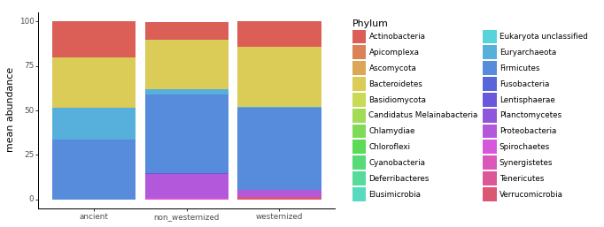
Question
What is the most abundant Phylum in all samples
Answer
Whether ancient, non westernised, or westernised gut microbiome sample, the phylum Firmicutes (officially renamed Bacillota since 2021) is the most abundant.
10.13 Ecological diversity
10.13.1 Alpha diversity
Alpha diversity is the measure of diversity withing each sample. It is used to estimate how many species are present in a sample, and how diverse they are. We’ll use the python library scikit-bio (http://scikit-bio.org/) to compute it, and the plotnine (https://plotnine.readthedocs.io/) library (a python port of ggplot2 (https://ggplot2.tidyverse.org/reference/ggplot.html) to visualise the results).
import skbioLet’s compute the species richness, the Shannon index, and Simpson index of diversity (Table 10.14)
shannon = skbio.diversity.alpha_diversity(
metric="shannon", counts=all_species.transpose(), ids=all_species.columns
)
simpson = skbio.diversity.alpha_diversity(
metric="simpson", counts=all_species.transpose(), ids=all_species.columns
)
richness = (all_species != 0).astype(int).sum(axis=0)
alpha_diversity = (
shannon.to_frame(name="shannon")
.merge(simpson.to_frame(name="simpson"), left_index=True, right_index=True)
.merge(richness.to_frame(name="richness"), left_index=True, right_index=True)
)
alpha_diversity| shannon | simpson | richness | |
|---|---|---|---|
| ERR5766177 | 3.032945 | 0.844769 | 21 |
| de028ad4-7ae6-11e9-a106-68b59976a384 | 0.798112 | 0.251280 | 11 |
| PNP_Main_283 | 5.092878 | 0.954159 | 118 |
| PNP_Validation_55 | 3.670162 | 0.812438 | 72 |
| G80275 | 3.831358 | 0.876712 | 66 |
| … | … | … | … |
| KHG_9 | 3.884285 | 0.861683 | 87 |
| A48_01_1FE | 4.377755 | 0.930024 | 53 |
| KHG_1 | 3.733834 | 0.875335 | 108 |
| TZ_81781 | 2.881856 | 0.719491 | 44 |
| A09_01_1FE | 2.982322 | 0.719962 | 75 |
Let’s load the group information from the metadata. To do so, we merge the alpha diversity dataframe that we compute previously, with the metadata dataframe, using the sample_id as a merge key. Finally, we do a bit of renaming to re-encode yes/no as non_westernized/westernized.
alpha_diversity = (
alpha_diversity
.merge(metadata[['sample_id', 'non_westernized']], left_index=True, right_on='sample_id', how='outer')
.set_index('sample_id')
.rename(columns={'non_westernized':'group'})
)
alpha_diversity['group'] = alpha_diversity['group'].replace({'yes':'non_westernized','no':'westernized', pd.NA:'ERR5766177'})
alpha_diversity| shannon | simpson | richness | group | |
|---|---|---|---|---|
| sample_id | ||||
| ERR5766177 | 3.032945 | 0.844769 | 21 | ERR5766177 |
| de028ad4-7ae6-11e9-a106-68b59976a384 | 0.798112 | 0.251280 | 11 | westernized |
| PNP_Main_283 | 5.092878 | 0.954159 | 118 | westernized |
| PNP_Validation_55 | 3.670162 | 0.812438 | 72 | westernized |
| G80275 | 3.831358 | 0.876712 | 66 | westernized |
| … | … | … | … | … |
| KHG_9 | 3.884285 | 0.861683 | 87 | non_westernized |
| A48_01_1FE | 4.377755 | 0.930024 | 53 | non_westernized |
| KHG_1 | 3.733834 | 0.875335 | 108 | non_westernized |
| TZ_81781 | 2.881856 | 0.719491 | 44 | non_westernized |
| A09_01_1FE | 2.982322 | 0.719962 | 75 | non_westernized |
And as always, we need it in tidy format (Table 10.16) for plotnine.
alpha_diversity = alpha_diversity.melt(id_vars='group', value_name='alpha diversity', var_name='diversity_index', ignore_index=False)
alpha_diversity| group | diversity_index | alpha diversity | |
|---|---|---|---|
| sample_id | |||
| ERR5766177 | ERR5766177 | shannon | 3.032945 |
| de028ad4-7ae6-11e9-a106-68b59976a384 | westernized | shannon | 0.798112 |
| PNP_Main_283 | westernized | shannon | 5.092878 |
| PNP_Validation_55 | westernized | shannon | 3.670162 |
| G80275 | westernized | shannon | 3.831358 |
| … | … | … | … |
| KHG_9 | non_westernized | richness | 87.000000 |
| A48_01_1FE | non_westernized | richness | 53.000000 |
| KHG_1 | non_westernized | richness | 108.000000 |
| TZ_81781 | non_westernized | richness | 44.000000 |
| A09_01_1FE | non_westernized | richness | 75.000000 |
We now make a violin plot to compare the alpha diversity for each group, faceted by the type of alpha diversity index (Figure 10.7).
g = ggplot(alpha_diversity, aes(x='group', y='alpha diversity', color='group'))
g += geom_violin()
g += geom_jitter()
g += theme_classic()
g += facet_wrap('~diversity_index', scales = 'free')
g += theme(axis_text_x=element_text(rotation=45, hjust=1))
g += scale_color_manual({'ERR5766177':'#DB5F57','westernized':'#5F57DB','non_westernized':'#57DB5E'})
g += theme(subplots_adjust={'wspace': 0.15})
g
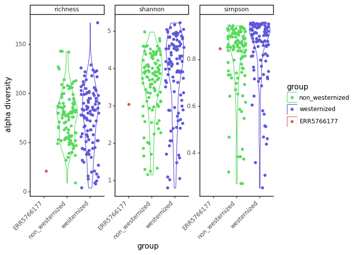
Question
Why do we observe a smaller species richness and diversity in our sample ?
Answer
There are different possibilies: - First, our ancient sample might genuilely have a lower diversity. - Second, our ancient sample diversity might have been lost through the degradation of the sample. - And third, the most likely explanation here: to make this tutorial fast enough, the reads were downsampled by quite a bit, which artifically lowered the diversity of this ancient sample.
10.13.2 Beta diversity
The Beta diversity is the measure of diversity between a pair of samples. It is used to compare the diversity between samples and see how they relate.
We will compute the beta diversity using the bray-curtis dissimilarity
beta_diversity = skbio.diversity.beta_diversity(metric='braycurtis', counts=all_species.transpose(), ids=all_species.columns, validate=True)We get a distance matrix
print(beta_diversity)
Expand to see command output
201x201 distance matrix
IDs:
'ERR5766177', 'de028ad4-7ae6-11e9-a106-68b59976a384', 'PNP_Main_283', ...
Data:
[[0. 1. 0.81508134 ... 0.85716612 0.69790092 0.8303726 ]
[1. 0. 0.99988327 ... 0.99853413 0.994116 0.99877258]
[0.81508134 0.99988327 0. ... 0.82311942 0.87202543 0.91363156]
...
[0.85716612 0.99853413 0.82311942 ... 0. 0.84253376 0.76616679]
[0.69790092 0.994116 0.87202543 ... 0.84253376 0. 0.82409272]
[0.8303726 0.99877258 0.91363156 ... 0.76616679 0.82409272 0. ]]To visualise this distance matrix in a lower dimensional space, we’ll use a PCoA, which is is a method very similar to a PCA, but taking a distance matrix as input.
pcoa = skbio.stats.ordination.pcoa(beta_diversity)
Expand to see command output
/Users/maxime/mambaforge/envs/summer_school_microbiome/lib/python3.9/site-packages/skbio/stats/ordination/_principal_coordinate_analysis.py:143: RuntimeWarning:
The result contains negative eigenvalues. Please compare their magnitude with the magnitude of some of the largest positive eigenvalues.
If the negative ones are smaller, it's probably safe to ignore them, but if they are large in magnitude, the results won't be useful.
See the Notes section for more details. The smallest eigenvalue is -0.25334842745723996 and the largest is 10.204440747987945.pcoa.samples| ...1 | PC1 | PC2 | PC3 | PC4 | PC5 | PC6 | PC7 | PC8 | PC9 | PC10 | ...12 | PC192 | PC193 | PC194 | PC195 | PC196 | PC197 | PC198 | PC199 | PC200 | PC201 |
|---|---|---|---|---|---|---|---|---|---|---|---|---|---|---|---|---|---|---|---|---|---|
| ERR5766177 | 0.216901 | -0.039778 | 0.107412 | 0.273272 | 0.02054 | 0.114876 | -0.256332 | -0.151069 | 0.097451 | 0.060211 | ... | 0 | 0 | 0 | 0 | 0 | 0 | 0 | 0 | 0 | 0 |
| de028ad4-7ae6-11e9-a106-68b59976a384 | -0.099355 | 0.145224 | -0.191676 | 0.127626 | 0.119754 | -0.132209 | -0.097382 | 0.036728 | 0.081294 | -0.056686 | ... | 0 | 0 | 0 | 0 | 0 | 0 | 0 | 0 | 0 | 0 |
| PNP_Main_283 | -0.214108 | -0.147466 | 0.116027 | 0.090059 | 0.076644 | 0.111536 | 0.092115 | 0.026477 | -0.00646 | -0.018592 | ... | 0 | 0 | 0 | 0 | 0 | 0 | 0 | 0 | 0 | 0 |
| PNP_Validation_55 | 0.244827 | -0.173996 | -0.311197 | -0.012836 | 0.031759 | 0.117548 | 0.148715 | -0.135641 | 0.03473 | -0.009395 | ... | 0 | 0 | 0 | 0 | 0 | 0 | 0 | 0 | 0 | 0 |
| G80275 | -0.261358 | -0.077147 | -0.254374 | -0.065932 | 0.088538 | 0.16597 | -0.00526 | -0.028739 | -0.002016 | 0.015719 | ... | 0 | 0 | 0 | 0 | 0 | 0 | 0 | 0 | 0 | 0 |
| ... | ... | ... | ... | ... | ... | ... | ... | ... | ... | ... | ... | ... | ... | ... | ... | ... | ... | ... | ... | ... | ... |
| KHG_9 | 0.296057 | -0.1503 | 0.013941 | 0.032649 | -0.147692 | 0.019663 | -0.06312 | -0.034453 | -0.073514 | 0.070085 | ... | 0 | 0 | 0 | 0 | 0 | 0 | 0 | 0 | 0 | 0 |
| A48_01_1FE | 0.110621 | 0.030971 | 0.154231 | -0.185961 | -0.008512 | -0.10342 | 0.028169 | -0.04453 | 0.041902 | 0.068597 | ... | 0 | 0 | 0 | 0 | 0 | 0 | 0 | 0 | 0 | 0 |
| KHG_1 | -0.100009 | 0.167885 | 0.009915 | 0.076842 | -0.405582 | -0.039111 | -0.006421 | -0.009774 | -0.072252 | 0.15 | ... | 0 | 0 | 0 | 0 | 0 | 0 | 0 | 0 | 0 | 0 |
| TZ_81781 | 0.405716 | -0.139297 | -0.075026 | -0.079716 | -0.053264 | -0.119271 | 0.068261 | -0.018821 | 0.198152 | -0.012792 | ... | 0 | 0 | 0 | 0 | 0 | 0 | 0 | 0 | 0 | 0 |
| A09_01_1FE | 0.089101 | 0.471135 | 0.069629 | -0.125644 | -0.036793 | 0.115151 | 0.060507 | -0.000912 | -0.027239 | -0.138436 | ... | 0 | 0 | 0 | 0 | 0 | 0 | 0 | 0 | 0 | 0 |
Let’s look at the variance explained by the first axes by using a scree plot (Figure 10.8).
var_explained = pcoa.proportion_explained[:9].to_frame(name='variance explained').reset_index().rename(columns={'index':'PC'})
ggplot(var_explained, aes(x='PC', y='variance explained', group=1)) \
+ geom_point() \
+ geom_line() \
+ theme_classic()
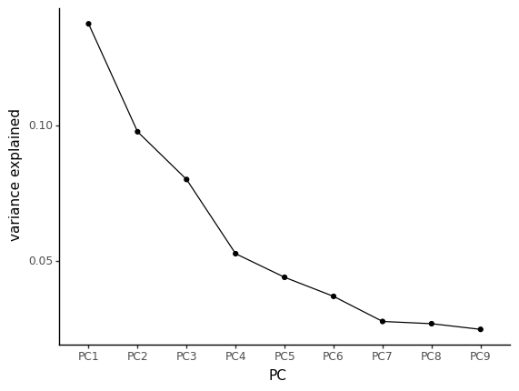
In this scree plot, we’re looking for the “elbow”, where there is a drop in the slope. Here, it seems that most of the variance is captures by the 3 first principal components
pcoa_embed = pcoa.samples[['PC1','PC2','PC3']].rename_axis('sample').reset_index()
pcoa_embed = (
pcoa_embed
.merge(metadata[['sample_id', 'non_westernized']], left_on='sample', right_on='sample_id', how='outer')
.drop('sample_id', axis=1)
.rename(columns={'non_westernized':'group'})
)
pcoa_embed['group'] = pcoa_embed['group'].replace({'yes':'non_westernized','no':'westernized', pd.NA:'ERR5766177'})Let’s first look at these components with 2D plots (Figure 10.9, Figure 10.10)
ggplot(pcoa_embed, aes(x='PC1', y='PC2', color='group')) \
+ geom_point() \
+ theme_classic() \
+ scale_color_manual({'ERR5766177':'#DB5F57','westernized':'#5F57DB','non_westernized':'#57DB5E'})
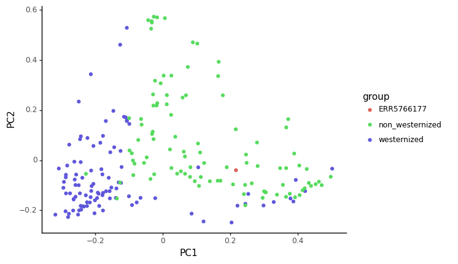
ggplot(pcoa_embed, aes(x='PC1', y='PC3', color='group')) +
geom_point() +
theme_classic() +
scale_color_manual({'ERR5766177':'#DB5F57','westernized':'#5F57DB','non_westernized':'#57DB5E'})
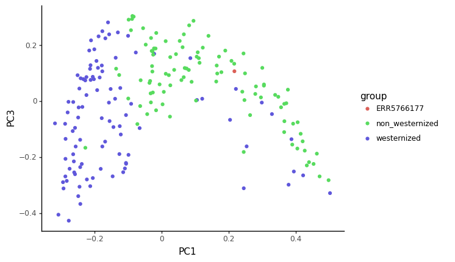
Expand to see additional visualisations
You can also plot the data above as a with a 3d plot if you were to run the following command
import plotly.express as px
fig = px.scatter_3d(pcoa_embed, x="PC1", y="PC2", z="PC3",
color = "group",
color_discrete_map={'ERR5766177':'#DB5F57','westernized':'#5F57DB','non_westernized':'#57DB5E'},
hover_name="sample")
fig.show()Finally, we can also visualise this distance matrix using a clustered heatmap, where pairs of sample with a small beta diversity are clustered together (Figure 10.11).
import seaborn as sns
import scipy.spatial as sp, scipy.cluster.hierarchy as hcWe set the color in seaborn to match the color palette we’ve used so far.
pcoa_embed['colour'] = pcoa_embed['group'].map({'ERR5766177':'#DB5F57','westernized':'#5F57DB','non_westernized':'#57DB5E'})
linkage = hc.linkage(sp.distance.squareform(beta_diversity.to_data_frame()), method='average')
sns.clustermap(
beta_diversity.to_data_frame(),
row_linkage=linkage,
col_linkage=linkage,
row_colors = pcoa_embed['colour'].to_list()
)
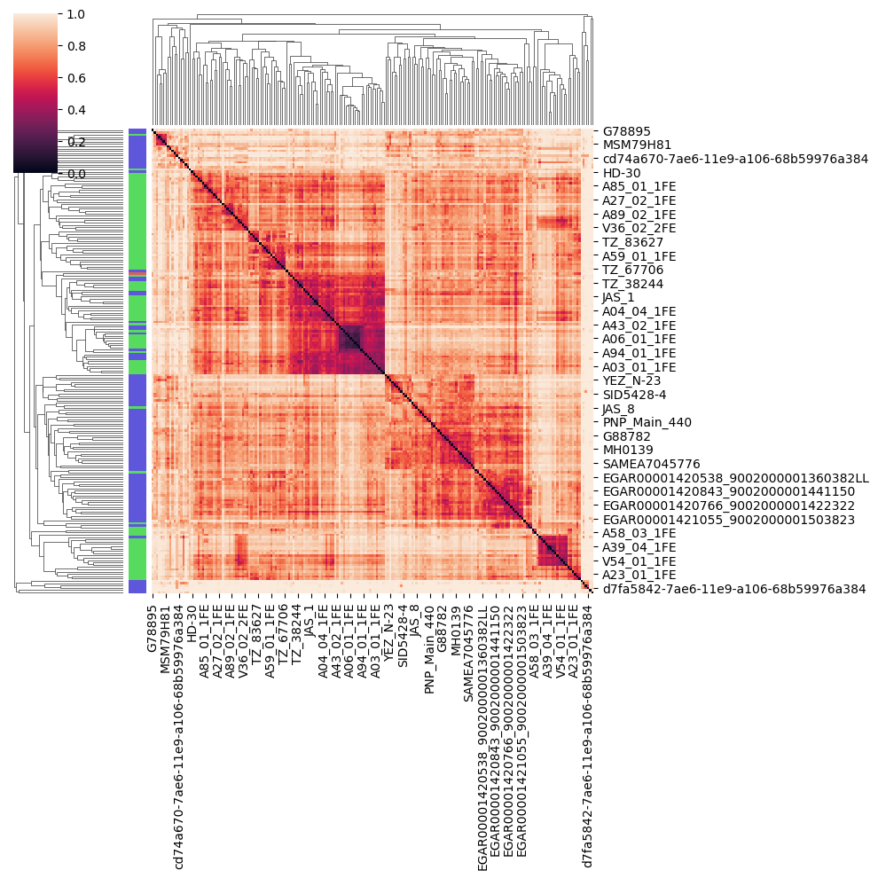
Question
Based on the PCoA and heatmap, how you think our ancient sample relates to modern ones ?
Answer
The sample we looked at in this tutorial is actually coming from the (Maixner et al. 2021) article, looking at a human gut microbiome found in a salt mine in nowadays Austria. This sample is actually for the Baroque period (150 years BP). Reassuringly for our analysis, the title of this article is Hallstatt miners consumed blue cheese and beer during the Iron Age and retained a non-Westernized gut microbiome until the Baroque period.
10.14 (Optional) clean-up
Let’s clean up your working directory by removing all the data and output from this chapter.
When closing your jupyter notebook(s), say no to saving any additional files.
Press ctrl + c on your terminal, and type y when requested. Once completed, the command below will remove the /<PATH>/<TO>/taxonomic-profiling directory as well as all of its contents.
Pro Tip
Always be VERY careful when using rm -r. Check 3x that the path you are specifying is exactly what you want to delete and nothing more before pressing ENTER!
rm -r /<PATH>/<TO>/taxonomic-profiling*Once deleted you can move elsewhere (e.g. cd ~).
We can also get out of the conda environment with
conda deactivateTo delete the conda environment
conda remove --name taxonomic-profiling --all -y10.15 Summary
In this practical session we
- Looked at how to process the raw sequencing data to focus only on the non-human reads
- Profiled these reads with the Metaphlan3 taxonomic profiler
- Looked at phylum composition, and alpha, and beta diversity with the help of PCoA and abundance heatmaps
Cautionary note - sequencing depth
We worked on relative abundances provided by metaphlan. But beware that not all taxonomic profilers will output relative abundances. To perform quantitative analysis of taxonomic profiles, sequencing data need to be normalised for sequencing depth. There are many different ways to normalise sequencing data, but this out of the scope of this session. Just to name a few, the most commonly used are RLE, TSS, rarefaction, CLR, or GMPR.
10.16 References
Breitwieser, Florian P., and Steven L. Salzberg. 2016. “Pavian: Interactive Analysis of Metagenomics Data for Microbiomics and Pathogen Identification.” bioRxiv, October, 084715.
Breitwieser, Florian P, and Steven L Salzberg. 2020. “Pavian: Interactive Analysis of Metagenomics Data for Microbiome Studies and Pathogen Identification.” Bioinformatics (Oxford, England) 36 (4): 1303–4. https://doi.org/10.1093/bioinformatics/btz715.
Chen, Shifu, Yanqing Zhou, Yaru Chen, and Jia Gu. 2018. “Fastp: An Ultra-Fast All-in-One FASTQ Preprocessor.” Bioinformatics 34 (17): i884–90.
Fellows Yates, James A, T C Lamnidis, M Borry, A A Valtueña, Zandra Fagernäs, S Clayton, M Garcia, Judith Neukamm, and Alexander Peltzer. 2020. “Reproducible, Portable, and Efficient Ancient Genome Reconstruction with Nf-Core/Eager.” bioRxiv 9 (June): e10947. https://doi.org/10.7717/peerj.10947.
Maixner, Frank, Mohamed S Sarhan, Kun D Huang, Adrian Tett, Alexander Schoenafinger, Stefania Zingale, Aitor Blanco-Mı́guez, et al. 2021. “Hallstatt Miners Consumed Blue Cheese and Beer During the Iron Age and Retained a Non-Westernized Gut Microbiome Until the Baroque Period.” Current Biology 31 (23): 5149–62.
Ondov, Brian D., Nicholas H. Bergman, and Adam M. Phillippy. 2011a. “Interactive Metagenomic Visualization in a Web Browser.” BMC Bioinformatics 12 (1): 385.
Ondov, Brian D, Nicholas H Bergman, and Adam M Phillippy. 2011b. “Interactive Metagenomic Visualization in a Web Browser.” BMC Bioinformatics 12 (1): 385. https://doi.org/10.1186/1471-2105-12-385.
Pasolli, Edoardo, Lucas Schiffer, Paolo Manghi, Audrey Renson, Valerie Obenchain, Duy Tin Truong, Francesco Beghini, et al. 2017. “Accessible, Curated Metagenomic Data Through ExperimentHub.” Nature Methods 14 (11): 1023–24.
Reback, Jeff, jbrockmendel, Wes McKinney, Joris Van den Bossche, Tom Augspurger, Matthew Roeschke, Simon Hawkins, et al. 2022. “Pandas-Dev/Pandas: Pandas 1.4.2.” Zenodo.
scikit-bio, developers. 2022. “Scikit-Bio: A Bioinformatics Library for Data Scientists, Students, and Developers.”
Segata, Nicola, Levi Waldron, Annalisa Ballarini, Vagheesh Narasimhan, Olivier Jousson, and Curtis Huttenhower. 2012. “Metagenomic Microbial Community Profiling Using Unique Clade-Specific Marker Genes.” Nature Methods 9 (8): 811–14.
Sharpton, Thomas J. 2014. “An Introduction to the Analysis of Shotgun Metagenomic Data.” Frontiers in Plant Science 5 (June).